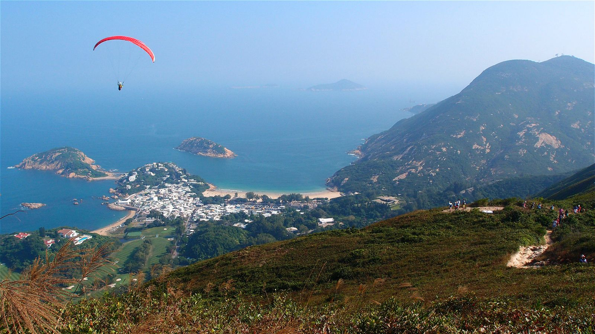
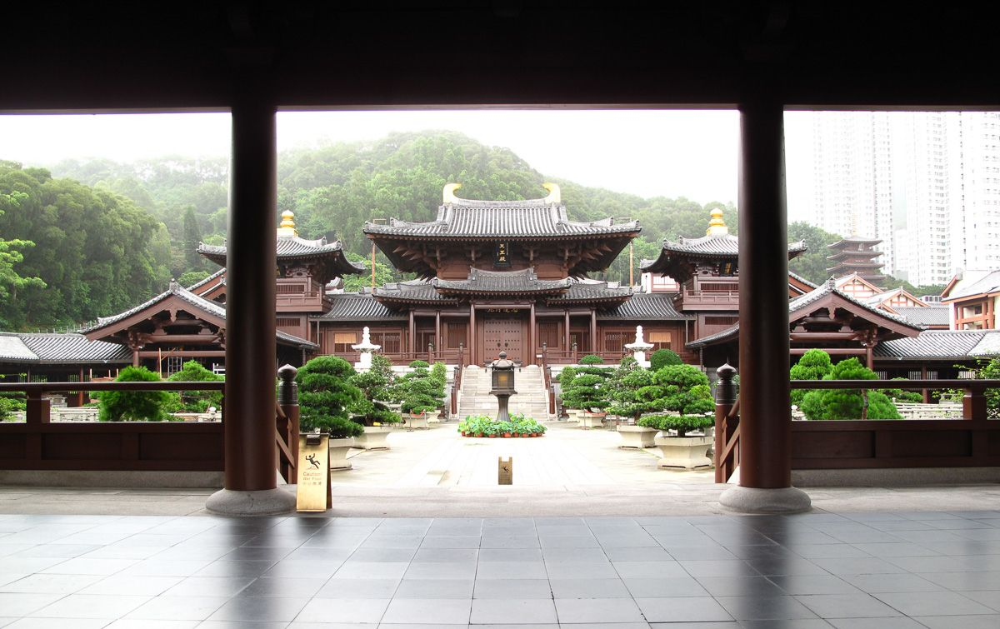

Exploring Hidden Gems of Hong Kong
Hong Kong is known for its skyscrapers, shopping, and vibrant nightlife, but there are many hidden gems that offer unique and unforgettable experiences. In this guide, we will explore some of these lesser-known spots.
Dragon's Back
Dragon's Back is a stunning hiking trail that offers breathtaking views of the coastline and lush greenery. It's a perfect spot for nature lovers and offers a peaceful escape from the city.
Tip: Start your hike early in the morning to avoid the heat and crowds.
PMQ
PMQ (Police Married Quarters) is a creative hub located in Central Hong Kong. It hosts a variety of design studios, shops, and eateries. It's a great place to find unique souvenirs and enjoy local art and culture.
Tip: Check their event calendar for special exhibitions and workshops.
Chi Lin Nunnery
Chi Lin Nunnery is a serene Buddhist complex located in Diamond Hill. The beautifully landscaped gardens and traditional wooden architecture provide a tranquil retreat from the bustling city.
Tip: Visit the nearby Nan Lian Garden for an extended peaceful experience.